Every chart on the nine 3-day pages now has a small box in its bottom-left corner. The box shows the same name's 30-minute candles for its last three trading days: green up, red down. It is 60% of the size you saw on 26 Sep. On an eight-chart page it is 93 × 68 pixels, about 5% of each chart.
“The context lens I like… the small little square… it could be smaller… they could still be quite a bit smaller.” — Alan, 27 Sep “I like this one at the bottom left.” — Alan, 26 Sep
Built on branch station/lens-ship-20260927 from the live Station head c8deb69. Not pushed and not deployed: nothing on the live Station has changed yet. The coordinator merges and deploys.
1 · What you will see
Where: always bottom-left, 6 px in from the chart's edges. It may sit on top of the oldest part of the 3-day line (the far past). It never covers the newest fifth of the line or the ticker badge.
What: the name, then “30M”, then the candles. Under them are the three days: WED THU FRI. A box narrower than 120 px shows only the weekday. A wider one adds the date (“WED 23”), “3 SESSIONS” and the last price.
Text is never smaller than 8 px, your floor. The frame is a plain grey card with its top-right corner cut at 45° (8 px), pointing at the chart. Nothing is white.
Only on 3-day charts. The nine pages are TARGETS, SECTORS, SPY + QQQ, MAG 7, AI 1, AI 2, AI 3, OTHER and BLUE CHIP. Switch the timeframe bar to anything but 3D and the box goes away. No other page gets it.
A stale box looks stale. If the newest 30-minute bars are older than the last trading session that has opened, the whole box is dimmed and its top-right says STALE (picture in section 3).
2 · Before and after (real headless browser, live chart data, taken 27 Sep ~17:50–18:02 UTC, 1680 wide)
Left: the live code today (c8deb69). Right: this branch. The same page, the same data, the same wait. Sunday afternoon, so the SPY + QQQ page shows the futures (ESUSD, NQUSD), as it does outside market hours.
MAG 7 — eight charts
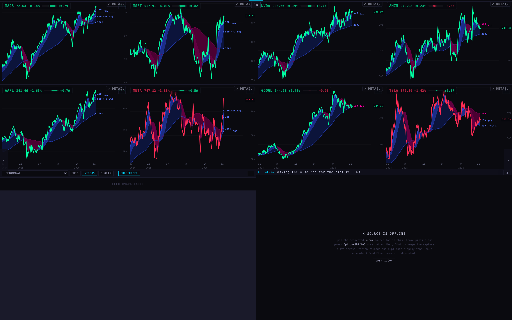
BEFORE · MAG 7 · 8 charts, no box
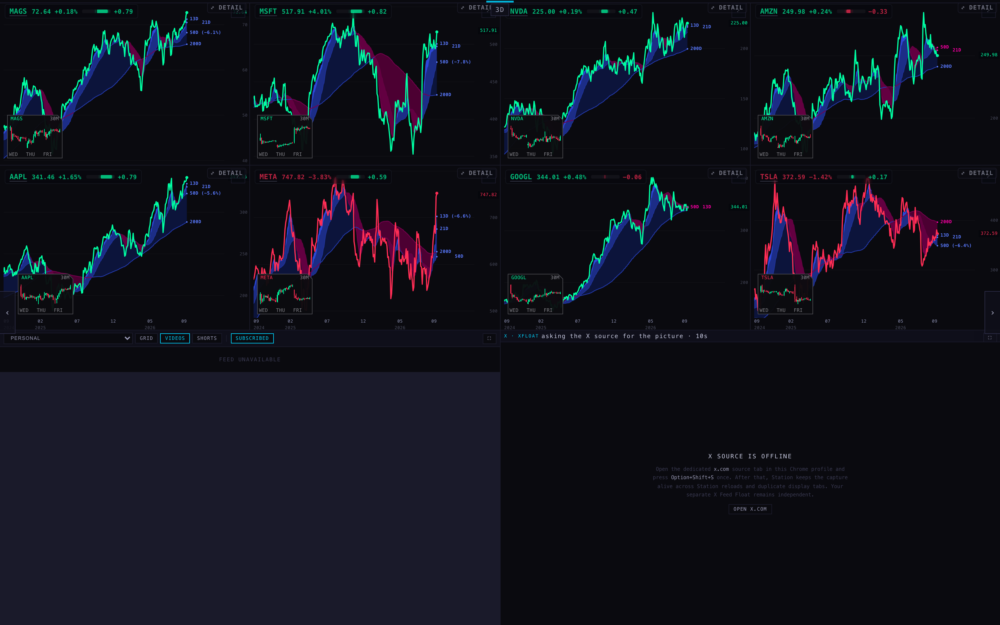
AFTER · a box bottom-left on all 8 · each 93×68 (top row 93×73)
What is visible: all eight charts draw exactly as before. Each one now has a small dark box low on its left with green and red candles and WED THU FRI under them. On AAPL (bottom-left of the wall) the box starts just right of the deck's “‹ previous page” arrow instead of underneath it. MSFT's box shows Friday's jump as a step up in the candles.
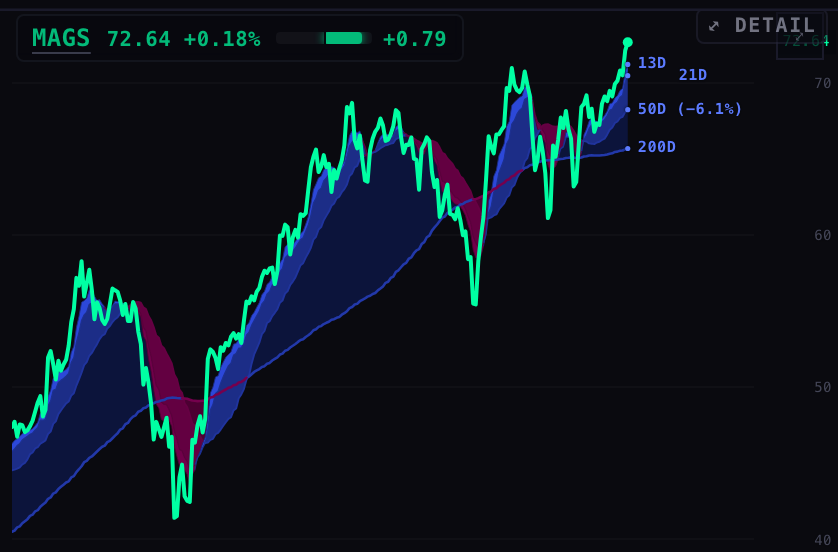
BEFORE · MAGS, one chart, full size
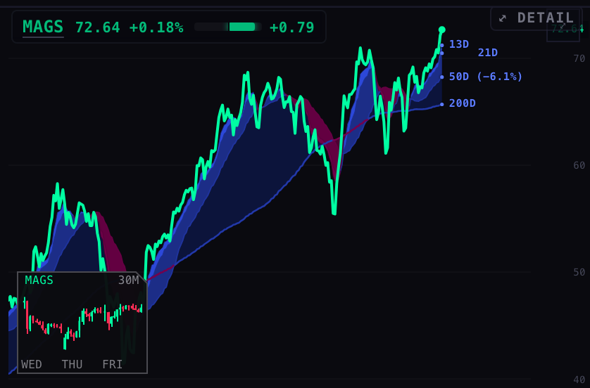
AFTER · MAGS · the box sits over the 2024 end of the line
AI 1 · CHIPS — eight charts
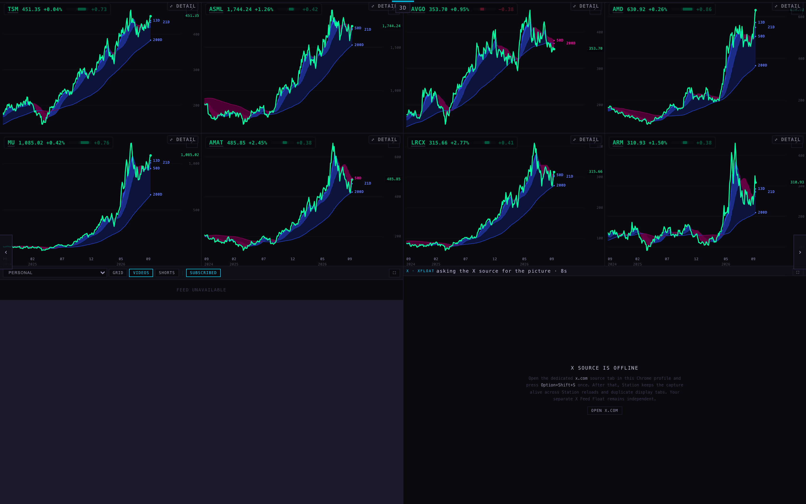
BEFORE · AI 1
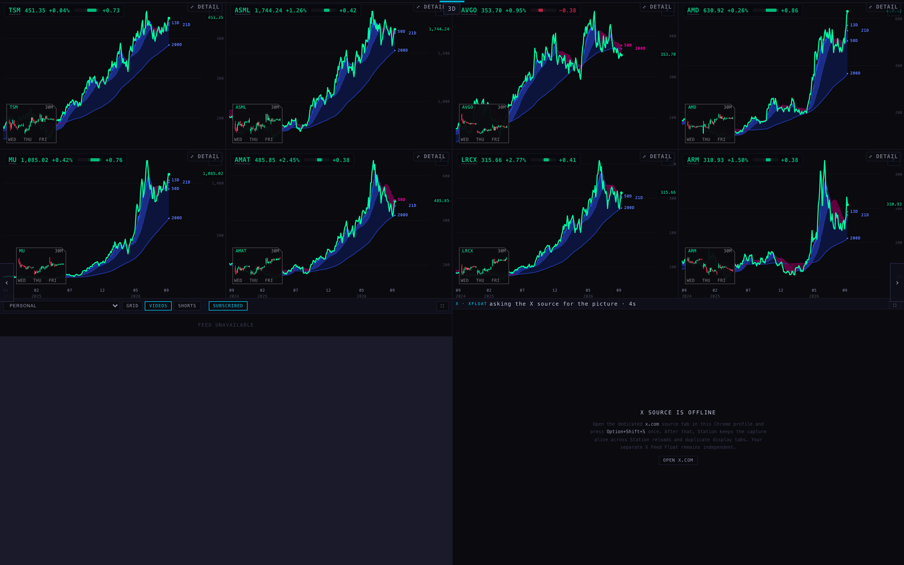
AFTER · 8 of 8 boxes · MU's moved right past the page arrow
BLUE CHIP — eight charts
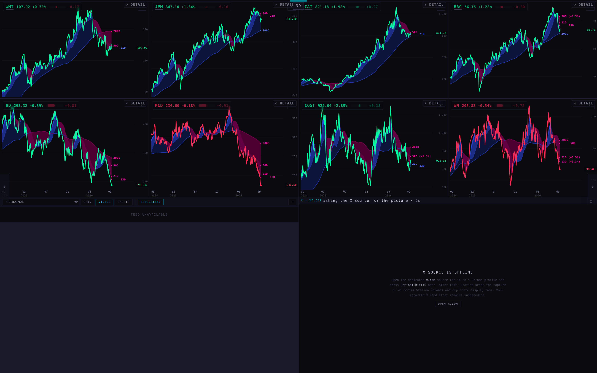
BEFORE · BLUE CHIP
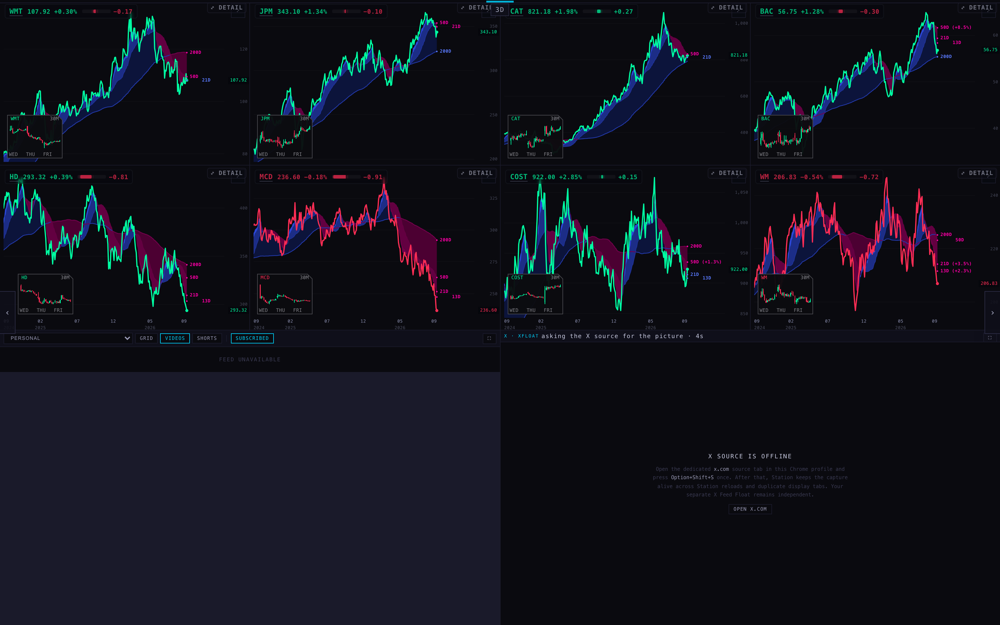
AFTER · 8 of 8
SPY + QQQ — two big charts
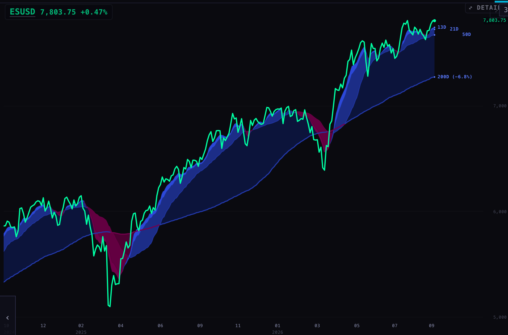
BEFORE · ESUSD, 840×554 chart
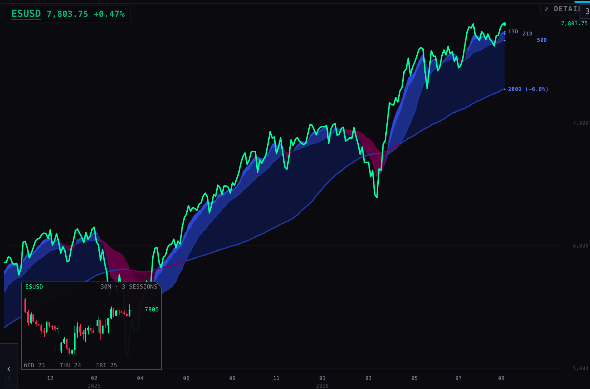
AFTER · 200×126, the largest it gets · dates, “3 SESSIONS”, last price 7805
Four-up size
No 3-day page is four-up today (they are eight-up, and SPY + QQQ is two-up). So this is four real Station chart panes at the deck's own four-up size (840 × 277, measured on the MACRO · 4H page), in a bare test grid. Outside the deck the panes get no deck quote, which is why some line and badge colours differ from the wall. That comes from the test grid, not from the box.
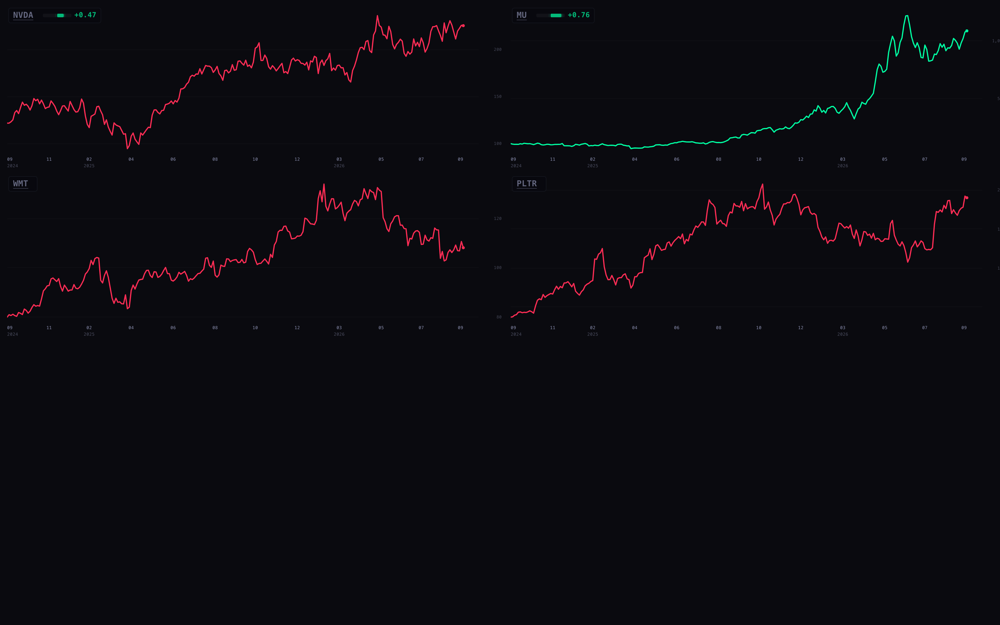
BEFORE · four-up
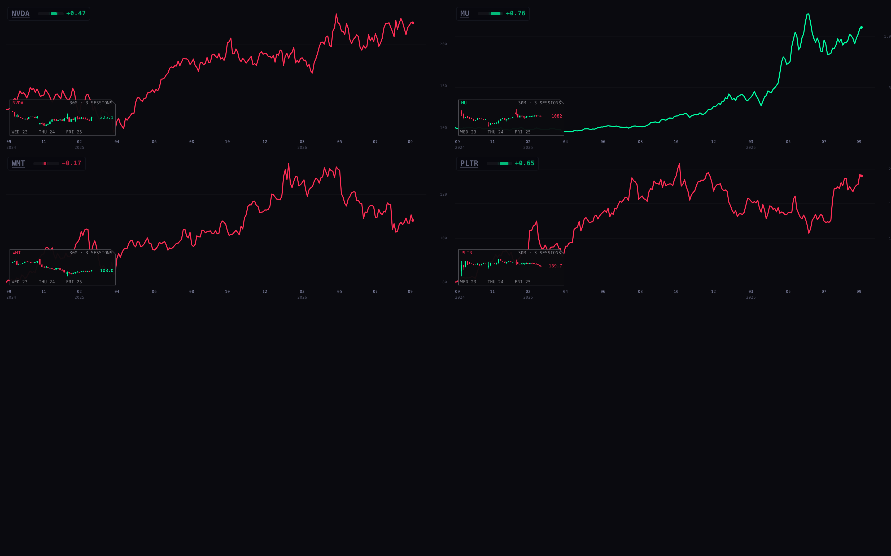
AFTER · 200×68 on a wide, short chart
Phone (390 wide)
BEFORE · MSFT on a phone
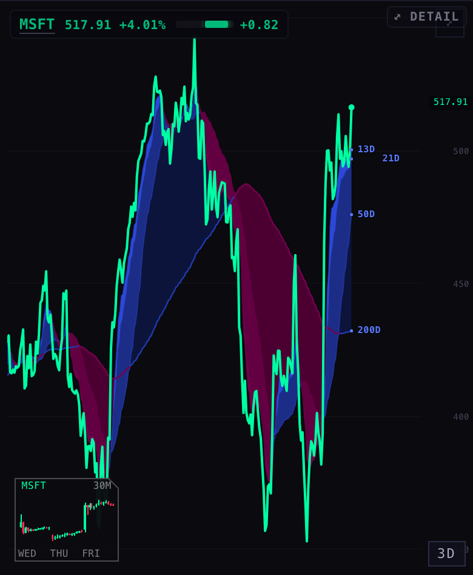
AFTER · 86×69 · never taller than it is wide
3 · A stale box
To show it, the test browser's clock was set to Monday 28 Sep, 11:00 New York. Monday's session has opened, but the newest bars are Friday's, so the box dims and says STALE. Nothing else was changed.
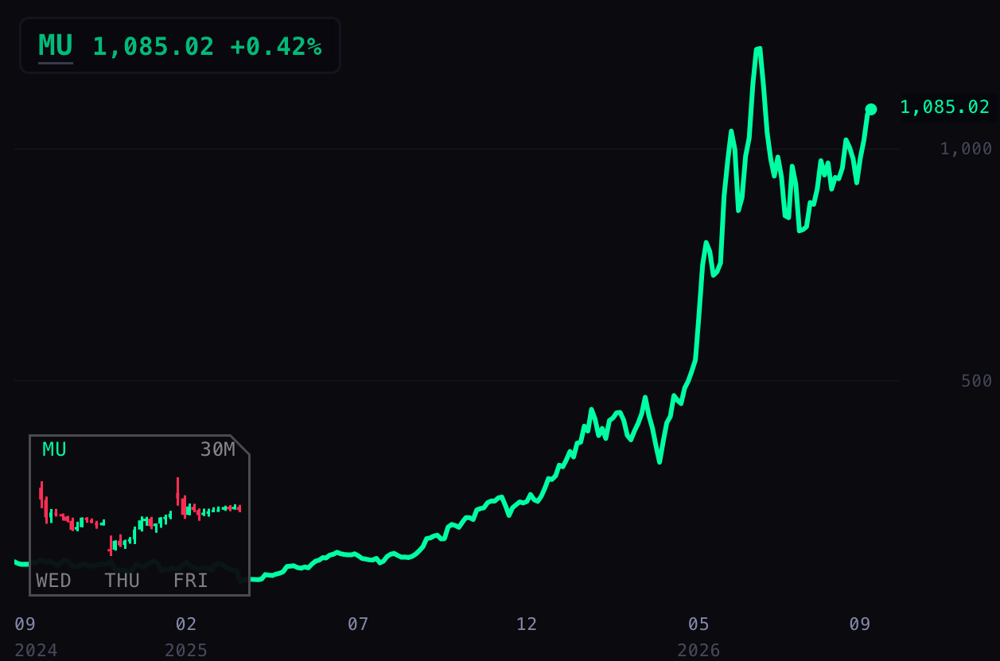
Today (Sunday): Friday's bars are the latest there are → normal
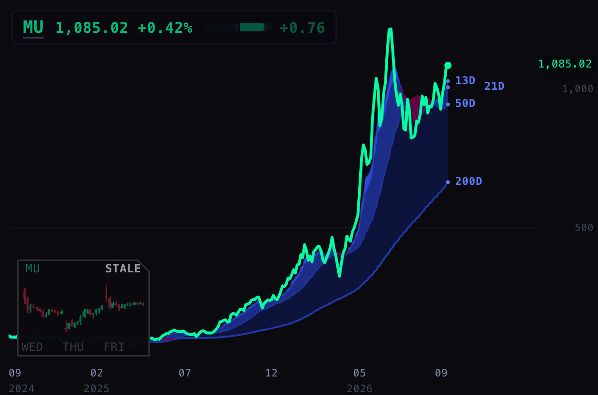
Clock at Mon 11:00 ET: Friday's bars are old → dimmed, STALE
4 · Where each number comes from
What
Source
The candles
The chart API (scintilla-massive-chart-api.fly.dev/candles?tf=30), the same route and provider the chart's own line uses. 128 bars are asked for, and only bars starting inside 09:30–16:00 New York are drawn, newest three sessions.
Green / red
Each candle's own close against its own open. The name in the box's top-left is coloured by the chart's own day up/down (the badge's rule).
“Stale”
The newest bar's New York date compared with the last session that has opened: today after 09:30 on a trading day, otherwise the trading day before. It uses the provider's own NYSE calendar, holidays included.
Size
60% of 26 Sep's box: 0.252 × 0.276 of the chart's drawing area. Never below 79 × 50, never above 204 × 126, never taller than 0.8 of its width.
5 · What it costs
Reads: one 30-minute read per chart, re-read at most every 10 minutes (a finished 30-minute bar cannot change). It waits for the chart's price to draw first and goes through the same queue, so it never delays a price. Measured on the pictures above: MAG 7 made 8 thirty-minute reads for 8 charts and SPY + QQQ made 2. The live code makes none.
CPU: measured on the real MAG 7 page (8 charts), below.
Result: no measurable cost. This is the whole headless browser's CPU on the MAG 7 page at 1680 × 1050: 45 seconds of loading, then one steady minute, which includes the charts' own 60-second refresh.
Runs
Loading (CPU seconds, once)
Steady (CPU seconds per minute)
30-minute reads
Without (live code, c8deb69)
3
1.24 · 1.08 · 1.14 → 1.15
0.98 · 0.83 · 0.89 → 0.90
0
With the box (this branch)
4
1.12 · 1.09 · 1.11 · 1.21 → 1.13
0.91 · 0.90 · 1.02 · 0.89 → 0.93
8 at load, 0 in the steady minute
The steady difference is +0.03 CPU seconds a minute. Runs of the same code differed by up to 0.15, so the difference is inside the noise. It is well under the +2 CPU seconds a minute ceiling the RSI-fan lane worked to. One more “without” run was thrown out because its browser had already gone when it was measured (it read −1.44), and it is kept, marked, in cpu-runs-1.json.
Method: headless Chromium on this MacBook; CPU of every browser process summed from ps; runs alternated without / with; raw rows in cpu-runs-1.json and cpu-runs.json. Another session's headless browser was running on the machine at the same time. It is not counted (only this run's own processes are summed), but it shares the machine.
6 · What could be wrong
The box covers the far past of the line. That is the ruling you and the coordinator made. If a chart's oldest stretch is the part you want to read, the box is on it.
Fallback corner. If bottom-left would cover the newest fifth of the line or the badge, the box goes to the emptiest corner that is clear. The chart records why, and on none of the 31 charts photographed did this happen. It only happens on a very narrow chart.
No box means there were no 30-minute bars to show: a name the API does not serve at 30 minutes, or a read that has not come back yet. It is never an empty frame.
Top-row charts get a slightly taller box (93×73 instead of 93×68), because they lend their time axis to the row below and so draw a little taller.
The screenshots were taken on a Sunday. During market hours the third day will be today, still forming.
7 · What I did not do
Did not push or deploy. Nothing live has changed.
Did not fix the scroll trap on the three lens review pages. The coordinator already did (commit c878c36 on the live line), so I left those files alone to avoid a merge clash.
The 26 Sep review page (CONTEXT-LENS-3) now draws the new, smaller size, because it shares the one bubble file. Its old screenshots still show the old size.
This page has no BACK / CLOSE pair: the Station repository has no inject-scnav.py (that is a Hub script).
The screenshots and CPU runs read the chart API through a local proxy that adds the one origin the API accepts (scintillahub.ai), GET only. Every other outside request was refused, so the deck used its built-in TARGETS list.